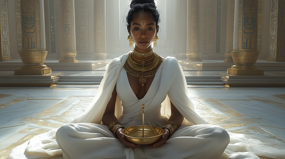

Step into the judgment hall of the universe itself in “Scale and Silence”, a powerful black symphonic metal tribute to Ma’at, the divine force of balance, harmony, and moral law. No god, mortal, or spirit can escape her gaze.
Who is Ma’at?
Ma’at is the embodiment of truth, justice, morality, and cosmic order in Egyptian mythology. She is not just a goddess, but the principle by which the universe exists. Her feather is used to weigh souls against their sins in the afterlife, and even the gods bow to her law.
Ma’at is often depicted as a woman with a single ostrich feather on her head, and her presence was felt in every courtroom, temple, and judgment.
Ma’at: Scale and Silence
In halls where stars align with breath
I weigh the soul, I speak of death
No sword I raise, no wrath I show
But in my gaze, all falsehoods go
The feather falls in silent grace
Beside the heart in time’s embrace
I do not punish, do not spare
I only see what lingers there
From chaos drawn, the line I trace
A law of flame, a judge’s face
I am Ma’at — the silent scale
The final truth behind the veil
No lie survives where I preside
The gods must bow, the kings must hide
In every breath, my balance flows
I am the flame that never goes
The stars obey, the winds align
The world endures because of mine
I bind the sun, I mark the tide
I hold the throne the gods can't bide
For justice isn't born of might
But whispered truths in sacred light
The scribes inscribe my sacred thread
In temples built for hearts long dead
From chaos drawn, the line I trace
A law of flame, a judge’s face
I am Ma’at — the silent scale
The final truth behind the veil
No lie survives where I preside
The gods must bow, the kings must hide
In every breath, my balance flows
I am the flame that never goes
When empires fall and ages pass
When dust consumes the gilded glass
I still remain, unscarred, unshaken
The root of peace that won’t be taken
In every oath, my shadow stands
In every law, my ancient hands
So speak with care, and walk with grace
For I am written in your face
From chaos drawn, the line I trace
A law of flame, a judge’s face
I am Ma’at — the silent scale
The final truth behind the veil
No lie survives where I preside
The gods must bow, the kings must hide
In every breath, my balance flows
I am the flame that never goes
No mercy need, no wrath to lend
I am the balance without end
The cosmic breath, the primal thread
The voice you hear when all is dead
So hold the feather, speak the vow
The truth is here, eternal now
I am Ma’at — the judge unseen
The soul's last breath, the world's unseen queen